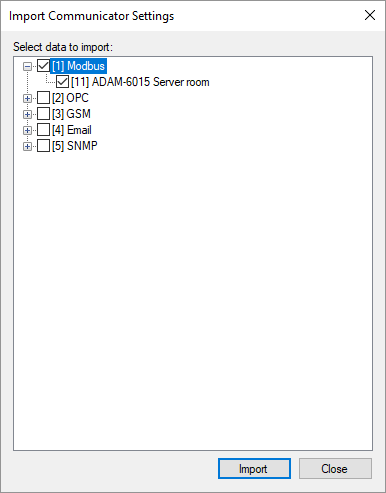
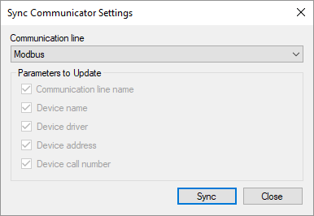

Figure 1. Main communication line parameters
Interaction with real or virtual devices is performed by the Communicator application, which acting as a master or a slave, polls data and sends commands to devices. All the devices are bound to communication lines. Communication lines are independent of each other and work in parallel.
The user interface of Communicator, designed for configuration, is built into the Administrator application. Communicator is configured as part of a project.
Figure 1 shows an example of the main communication line parameters. A communication channel determines physical interface or network protocol which is used for data exchange with devices. The following communication channels are supported: Serial port, TCP client, TCP server and UDP. In some cases, if the interaction with devices is implemented by a device driver, communication channel should be undefined (e.g., the OPC driver).
If sending commands to devices is not required, it is recommended to untick the Commands enabled checkbox due to safety reasons.
Figure 1. Main communication line parameters

Figure 2. Request sequence
Communication order and request parameters are set on the Request Sequence page (see Figure 2).
If the Active checkbox on the Main Parameters page is unset, the corresponding communication line is disabled, and no requests are performed. If the Active checkbox in the Selected Device group box is unset, communication with that device is disabled.
The Bound to Server checkbox on the Main Parameters page allows to switch on or off sending the communication line data to Server. The Bound to Server checkbox in the Selected Device group box has the similar purpose, but applied only for the device. If the Interact with Server checkbox on the Common Parameters page of the Communicator settings is unset, any interaction between Communicator and Server is disabled. These options are useful for testing new devices being connected to the system.
If the Time and Period parameters of a device are equal to zero, the device is requested cyclically. If the Time parameter is greater than zero and Period is zero, the device is requested once a day in the specified time. If Period is greater than zero, the device is requested periodically starting at the specified time. The Timeout field defines how long to wait an answer from the device after a request. The Delay field defines a delay after each request to the device. Command line may contain additional parameters described in documentation of a device driver.
To reset request parameters of the selected device to the default values, click the Reset button. To open the device properties form, if it is supported by a driver of the selected device, click the Properties button or use a popup menu of the project explorer. To set global properties for a device type, choose the Drivers page, select the device driver and click the Properties button if the button is enabled.
To import communication lines and devices from the configuration database to the Communicator settings, right-click the Communication Lines node or a node of a specific communication line in the project explorer and select the Import item in the context menu. The import form is shown in Figure 3.

Figure 3. Import Communicator settings
The settings synchronization feature (see Figure 4) is also run using the communication line context menu. Synchronization allows to update the parameters of existing communication lines and devices according to the configuration database, however, the parameters entered manually may be lost.

Figure 4. Sync Communicator settings